Tradición, pasión y calidad en cada botella. Descubre nuestra historia y nuestros vinos únicos.
Vinicola Santa Elena es uno de los proyectos enológicos más emblemáticos de Aguascalientes. con más de 20 años de historia
, ha logrado combinar tradición y modernidad para ofrecer experiencias enoturísticas únicas en la región.
Aquí puedes conectarte con el vino desde su origen,recorridos viñedos,bodegas y Barricas
, mientras conoces sus procesos de producción.
Al final , disfrutarás de una cata guiada que revela la identidad y riqueza de esta tierra
vitivinícola.
Vinícola Santa Elena

Visítanos y descubre nuestros vinos artesanales en un ambiente natural. Te esperamos para que vivas una experiencia única entre viñedos.
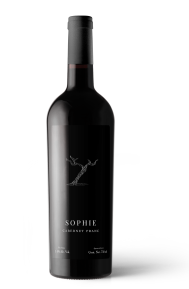
Región: Pabellón de Arteaga , Aguascalientes, (Valle de Montegrande) suelo:Arcillo-Arenoso , Altura:1,950 M.S.N.M.
Varietal : Cabernet Franc 100% 13.8% Alc.Vol.
Vinificación: Fermentación en foudres de madera y acero inoxidable.
Crianza: 6 meses en foudre posteriormente pasa 12 meses a barrica.18 meses en roble francés nueva.
Vista:Es un vino de color profundo y limpio.
Nariz :Se percibe principalmente la fruta sin dejar de ser complejo, aroma de frutos negros como la zarzamora y ciruela, con notas sutiles de vainilla, canela y pimienta negra que sugieren una crianza respetuosa.
Boca:Excelente estructura,armonioso.
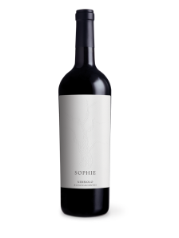
Región: Pabellón de Arteaga , Aguascalientes, (Valle de Montegrande) suelo:Arcillo-Arenoso , Altura:1,950 M.S.N.M.
Varietal : Nebbiolo 100% 13.8% Alc.Vol.
Vinificación: Fermentación en foudres de madera, tinta de concreto y acero inoxidable.
Crianza:12 meses en foudre, concreto y barricas de primer uso.
Vista:Carmín con ribete atejado.
Nariz :Frutos rojos, cereza, ciertas notas florales y tostadas.
Boca:Vino ligero y completo, con taninos maduros y suaves, buen balance de acidez, en boca predomina fruta fresca. .
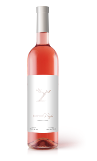
Región: Pabellón de Arteaga , Aguascalientes, México.
Varietal : Cabernet Franc 100%.
Vinificación: Acero inoxidable.
Crianza:3 meses en tanque de concreto.
Vista:Aspecto brillante, limpio y un color rosa salmón.
Nariz :Personalidad muy frutal, con notas a durazno , frambuesa, cítricos de toronja y una ligera nota de almendra.
Boca:Excelente acidez , buen balance, armonia en boca con un toqu de notas de toronja.
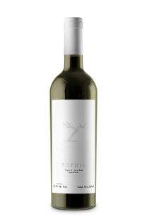
Región: San Francisco de los Romos, Aguascalientes, México.
Varietal : Chenin Blanc 80% y Viognier 20% 12.4% Alc.Vol.
Vinificación:Fermentación en acero inoxidable, foudres y tinas de concreto .
Crianza:Viognier son 9 meses en ánforas de barro y el Chennin Blanc son 9 meses en barrica de roble francés de primer uso.
Vista:Amarillo pajizo con destellos verdes.
Nariz :Jazmín,durazno y chabacano con notas ligeras de roble y vainilla aroma a tarta de limon.
Boca:Acidez balanceada, vino ligero y brillante, complejo, con cuerpo medio y excelente sensación en boca.
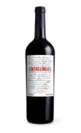
Región:Pabellón de Arteaga(Valle de Montegrande).
Varietal : Malbec,Syrah,Nebbiolo 13.8% Alc.Vol.
Vinificación:Cosecha manual. Fermentación de cada variedad de manera individual en tanques de madera, concreto y acero inoxidable.
Crianza:Crianza de 8 a 10 meses en barricas de robles francés y en tanque de concreto.
Vista:Limpio brillante de capa media y de color granate con destellos cereza.
Nariz :Alta intensidad aromática.Frutos como ciruela,grosella y moras
Boca:Suave y amable, con taninos redondos que lo hacen más fácil de beber, pero cierta complejidad.
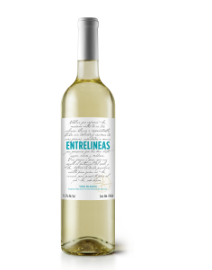
Región:Pabellón de Arteaga(Valle de Montegrande).
Varietal :Blanc de Blancs 12.2% Alc.Vol.
Vinificación:4 meses de reposo en barricas de roble francés.
Vista:Limpio brillante , de color amarillo pajizo con reflejos dorados con evolución.
Nariz :Resaltan las frutas amarillas,manzanas,guayaba y carambola, muy fresca con un ligero toque de nueces.
Boca:Tiene un incio amable donde las frutas dominan, destaca la guayaba y se reveka tambien algo de mandarina en la boca media que al llegar al final armoniza con un leve toque de nuez.
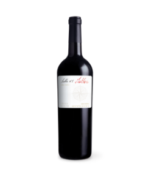
Región:Pabellón de Arteaga,Aguascalientes,México.
Varietal :Malbec 13.8% Alc.Vol.
Vinificación:Cosecha manual. Fermentación alcohólica y maloláctica en tonel de roble. Crianza en barricas de roble francés.
Vista:Púrpura con destellos cereza y ribete granate, alta intensidad de color. Limpio y brillante, con altadensidad en lágrimas.
Nariz :Frutos negros maduros como ciruela y zarzamora. Especias como canela y un toque de vainilla. Presenta una nota láctica a yogurt de fresa y un toque de pan tostado
Boca:Ataque intenso, de alcohol cálido, tanino aterciopelado y acidez pronunciada pero armoniosa. Untuoso, con mucho cuerpo y estructura. Mucha fruta madura y especias en el post gusto.
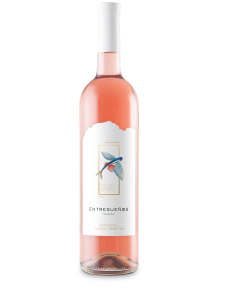
Región:San Francisco de los Romos, Aguascalientes, Mexico.
Varietal :Malbec 10.8% Alc.Vol.
Vinificación:Cosecha manual entre el 15 y el 17 de septiembre de 2018 y 8 horas de maceracion con piel y semillas y su fermentacion es en tanque de acero inoxidable.
Vista:tiene un color salmon intenso con destellos dorados y brillantes.
Nariz :Fresco , con matices a fresas y duraznos, abre despues de unos segundos y se vuelve un poco mas " dulce" conforme pasan los minutos.
Boca:citrico en madurez, algo de toronja y durazno.vino largo y que va adquiriendo cierta complejidad.
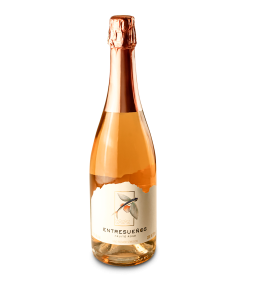
Región:Pabellón de Arteaga, Aguascalientes, Mexico.
Varietal :Blend de tintas 11% Alc.Vol.
Vista:Brillante rosa salmón, delicada y continua burbuja
Nariz :intensidad aromática frutal evocando notas de grosella, frambuesa, fresa y arándonos.
Boca:Elegante vino al paladar de caracter dulce, se percibe afrutado denotando notas a frutos rojos,canela,flor de jamaica y levaduras.
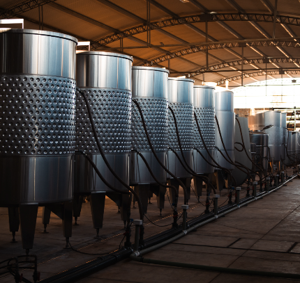
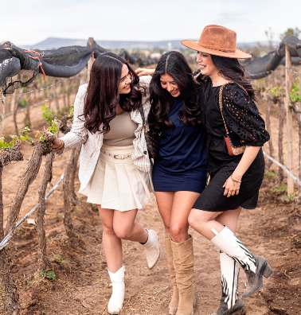
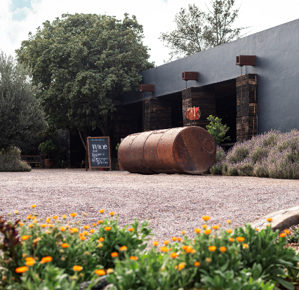